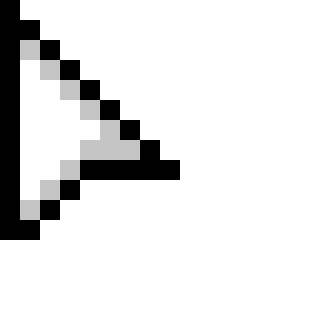

These are all the updates made to Locked In so far.
about update types
Feature update: adds new features, like, for example, classes (added in Alpha V4) and bosses (added
in Alpha V3). Alpha V4 is a feature update.
Content update: adds new content, like more guns, bosses and sections. Alpha V3 and V5 are content updates.
Fix update: fixes major bugs, or just a lot of bugs. Expect more of these in the future. Alpha V6
is a fix update.
Pre-update: before a proper update is released, Locked In will have a "pre-update" (named something
like "V4-P"), which just allows for people to play the game with the new update, and report bugs,
and have them fixed in the next update.
V6-P - Pre-Fix Update
Note
We've got the same disclaimer as last update - there are no NPCs this time, unfortunately. We're still working (very slowly, but still) on the main NPC (John Gold)
and his quests. The story will be finished! I will not be happy with this game until the story is done. And I know this sounds like the story of someone who's lost
all motivation. If I had, then this update wouldn't be here!
New Boss: Corrupted Heart
We've added a new boss! Unfortunately, it's not a conga line of robots. But it's another boss, instead of just having one.
It's a corrupted heart, and it spawns rounds of enemies, as well as other enemies spawning more quickly.
Killing it won't give you any special rewards, but will give you a lot of coins.
Try and find it, and slay it for its gold!
Changes to Sounds
Let's admit it: the previous sound design for Locked In was quite lackluster.
So, to change it, we've added:
3D Sound
Instead of being flat and boring, we've changed the sounds so they change volume depending on distance, and are directional! This means that both of your ears
can hear different things, making the game even more sickening.
Footstep Sounds
Footstep sounds now play for the player (as well as a very subtle walking animation that is just the player getting bigger and smaller). We wanted to add this
because otherwise, between fights with enemies, it's just dead silence. Which is eerie, but boring. Instead, the footstep sounds make it seem lonelier. Because you are lonely.
Louder Music
The music is a lot louder now, especially in boss fights, because before, you couldn't hear it over the shooting.
Enemy Sounds
Another thing that helps with boring emptiness is ambient sound! Enemies now will give off a random, appropriate sound (meaning a zombie won't make the sound of a gun shooting).
UI Sounds
There are new UI sounds for when you press most buttons, as well as hovering over them.
Camera Changes
The camera was also a bit of a boring aspect of the old game: now we've changed it completely to be a lot more immersive, and easier to use.
Old camera
New camera
Slow
Much faster
Far away
Closer
Can see both times
Can't see both sides
Unresponsive
Moves towards mouse pointer
If you're wondering why we've downgraded the range of the camera, it's because we want the game to be more immersive, just like the 3D sound changes.
It will also be good to know people respond to some more experimental changes.
Main Menu!
I can't believe we went for so long without even a menu screen!
In it, there are options to:
Play the game
Change Loadout
Change class (this can no longer be done in game)
Change settings (which is still a mess right now)
Exit the game (but we don't press that one, do we?)
It also has some exclusive music (the track is called 'Into the Depths') handmade by yours truly, EJGames.
Tweaks / Bug Fixes
Quality of life changeCoins move towards you Instead of being really difficult to catch, coins will now move towards the player when they are near.
Cool featureMusic muffles in the menu
Bug fixBug fix: Wannabee can't hit the player Before, the bee boss wouldn't be able to hit you due to the changes to how enemies attacked. This has now bee-n fixed!
SuggestionsShaking has been greatly decreased Rather than being uncomfortably vigorous with the shaking, we've toned it down a bit. The guns aren't that hard to use.
Bug fixEnemies spawn closer Instead of spawning 50m further up, they just spawn offscreen.
Quality of life changeDying is much more polished There is now a 'you died' screen that shows how many coins you collected, how far you travelled etc.
Performance optimisationNo camera in the menu It was taking up a lot of memory, and is not worth the effort of actually optimising it.
General updateNew font It's probably just me being sick of it, but I hated the old one. Also, it now matches the website. It's called "Be Vietnam Pro", for all of you
who care about it for some reason.
General updateNotifications are darker
Quality of life changeNotifications appear quicker It might make you jump, but at least you get the information quicker.
Quality of life changeChanged FPS counter font This was to improve readability, so that all the digits are in the same place.
General updateNew icon It's no longer just a zombie. Although it might be changed again, because it doesn't look too good when actually as small as an icon.
Bug fixBug fix: enemy clusters wouldn't spawn correctly It's because I added too many zeroes to the distance from the player! Or something. But it's fixed now.
General updateMusic changes Added new track ('Into the Depths') and added more tracks for different zones, as well as shuffling some tracks around.
V5-P - Pre-Content Update
Note
We've (we being just me) been working on the storyline for the game. But because it's not finished, and we want to keep releasing updates, we've just removed NPCs for now
and we'll add them back in once the story is finished. And then... oh, I don't know what will happen once the game is done.
Zones
We have biomes! But let's not call them that, because that's associated with a certain other pixel-art based game.
Right now, we've got:
Normal Zone
Mites, zombies and robots roam this area. It's also the place that you start. But it can also appear further on.
Frosty Zone
Frost zombies, snowman zombies and mites are here. It's also really easy to find. Just 50 or so metres away from the start.
Shady Zone
Thugs! Darkness! Where have the lights gone? Why is there a car alarm in the music? Find all this and more in the Shady Zone! (only appears 150m in, and further).
More weapons!
We've added a new weapon. There are way more weapons that you can unlock by killing enemies, and bosses, and completing quests, but right now, we've only added one that you can buy:
The Streetsweeper
Automatic Shotgun
Fires around 4 rounds per second
Medium spread, high damage at close range
1500 coins
Ingame description: A fast-firing, automatic shotgun, that allows for spraying the enemies while holding down the trigger. Sure, it's not the most skillful, but it's definitely effective.
Enemy changes
Technical alert!Do you want to know about a really boring change? If not, then just skip this section. If you do, then go on, read ahead!
We've changed how enemies work to reduce the really quick kills (when enemies would just run into the player repeatedly, with no gaps inbetween hits, and kill in under a second).
To do this, we have removed collision-based attacks, and now, enemies damage the player over time, if they are in range.
This does mean that enemies can hit from a longer range. But, we have specifically set each enemy's range to a different value, that suits the enemy, so that
not all of the enemies can snipe you from 50m away.
Tweaks! Yay!
Because of the very frequently asked question, "Why don't you have more tweaks in your changelogs?", I'm happy to announce that I noted down all of the changes I made
in Locked In V5.
New cursor Added a new cursor, that looks like this:  and changes based on what you're hovering over. Mainly just guns.
Light spell We've removed the 'shows the way forward' aspect of the spell for the Light class. It was just completely weird, going through walls, and for some reason, changing its mind to
which way is forward...?
Removed lanterns on the side
Teleporting into walls is no longer allowed There's just a notification telling you that you can't, and it stops you from teleporting if there's something in the way.
V4 - Feature update
Tweaks
Top tip: don't release an update without playtesting it. Actually, we've done it right by releasing pre-feature updates. This is the first one! Here are the changes
we've made since V4-P.
LMG does 1 less damage per shot (going from 17 to 16)
The Wannabee weapon does more damage, as requested by some individuals
The LMG has been fixed. No more 150-pellet shots. Can't believe that one made the update.
Music has been changed, and returned to its former glory. The new songs (made by me, of course) are so much better than the old ones, some of which weren't made my me.
If you've seen one of those flickering lights, you won't any more. Those were chests trying to spawn. That's been fixed.
Some of the older versions are still in the old changelog format. It doesn't look too bad, though, does it?
V4-P - Pre-feature update
New feature: classes!
Classes can be chosen by opening the main menu (escape) and choosing "Select Class".
There are currently 5 classes, each with a passive and a spell:
Frost: the spell is "Frostwind" and the passive is "Cold shots"
Frostwind: "Sends a gust of wind at the enemies, knocking them back and freezing them for 5
seconds."
Cold shots: "Hitting an enemy can slow it for 5 seconds."
Fire: the spell is "Firewall" and the passive is "Flaming bullets"
Firewall: "Sends a wall of flames towards the enemies, damaging them and setting them on fire
for 10 seconds."
Flaming bullets: "Each shot has a chance of setting the enemy on fire for 5 seconds."
Magic: the spell is "Teleport" and the passive is "Defence impulse"
Teleport: "Allows instant teleportation through walls to the mouse's position."
Defence impulse: "When below 25% health, a small magic impulse is sent out, dealing damage to
all enemies in range."
Life: the spell is "Heal" and the passive is "Restoration"
Heal: "Instantly heals for half of your maximum health."
Defence impulse: "Passive healing is twice as fast, and activates 25% quicker."
Light: the spell is "Snapshot" and the passive is "Insight"
Snapshot: "Reveals the direction of all enemies, and shows the way forward."
Defence impulse: "The closer the darkness gets, the brighter the area."
Well, that was a lot of information!
NPCs and Quests
Specifically a mechanic, who goes by the name... John Gold.
Disclaimer:
The current NPC, John Gold, only gives 1 quest, which does not have progress that can be saved.
This is in order to add NPCs in Locked In V4 without having to spend even more time adding new
quests and rewards.
More quests, and possibly more NPCs, will be added in the next Content update, along with possible
new bosses, guns and sections.
Anyway, the new NPC, John Gold, will give you a quest, and after the quest, he will despawn, and won't
spawn again until you restart.
This will be changed in a future update. We've already got some stuff ready for it!
And don't worry. We definitely won't make it easy! What? It's not like we're going to make you kill lots of
really rare enemies and get a very small reward? Pff. No. No way.
A massive UI update
New loadout screen! Check it:
Isn't that just so much better than before? Remember the really ugly box
that used to pop up to change your loadout?
New notifications!
Simple, quick notification!
For when you need information mid-game, like if your spell is on
cooldown. It has a shake too! Wow!
Notify popup!
Ooh, look at you, you privileged player! Getting to choose your
option? That's not available to some people, remember.
Confirm popup!
You have no choice over what to answer on this one!
Bug fixes and tweaks
Everyone's favourite part!
Wannabee will no longer disappear off the map... hopefully.
Firerate of guns is no longer affected by framerate.
Enemies will no longer get caught on walls.
And, as always, the ones that I can't remember off the top of my head.
Post-update note
This update is hopefully going to change the style of Locked In, turning it from a repetitive, fast paced
shooter, to a more randomized, chaotic (but not infuriating... yet) arcade game.
We've tried as hard as we can ('we' being me, alone) to add some more features and content to the game, as well
as freshening up our website. If you want to support us, visit our itch.io page and,
after we set up donations, donate!
V3 - Content Update
In this update, we added bosses! Specifically a bee called Wannabee!
Has multiple different phases
Spawns in an exclusive enemy (small bee)
Gives a secret new weapon when defeated!
New gun: LMG
Fires as quick as an AR
Long time before lots of shake
Kills pretty quickly!
New gun: Kar98k
Does 150 damage in one shot
Pierces enemies
Takes time to aim in before shooting
Kills a lot of things instantly!
Added a few tiny changes and bug fixes
Your head now moves before your body and gun
Added a movement counter, and darkness speed indicator
The gun now goes under your head and over your arms, instead of being on top of both
A few other teeny tiny ones that I can't remember off the top of my head
 There are currently 5 classes, each with a passive and a spell:
There are currently 5 classes, each with a passive and a spell: